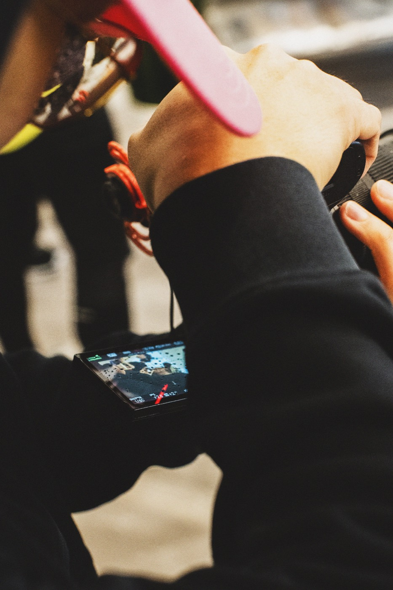
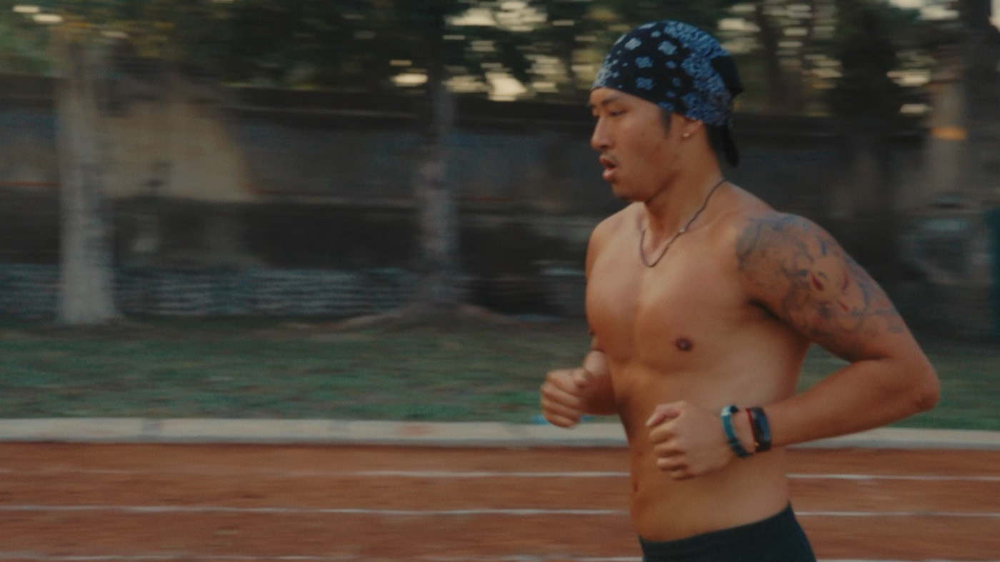

Health & Fitness
Challenging my body and mind. 3 mins of planks every day since 2026.
StravaBali, for now · home is Toronto
The only measure of a good life is how much you enjoy it.
Scroll
Who I am
Hey, I'm Chun.
A few years ago I left my job and went to Southeast Asia on my own. I started filming myself talking through whatever I was working out at the time.
I don't have this figured out. I say that a lot because it's true, and because most people describing their lives on a website are quietly pretending otherwise.
This page is a snapshot of where I'm currently at.
What I do
Most of my days go into short-form video or carousel posts. Shooting it, cutting it, posting my own, and making it for brands that want content marketing.

How I Spend My Time
Challenging my body and mind. 3 mins of planks every day since 2026.
StravaExploring the possibilities with AI, and creating small tools to optimize my life.
UNBRKN.Chasing waterfalls, mountains and sunsets, and capturing as much of it on film as I can.
InstagramSharing the lessons I've learned about travelling, life, fitness and growth.
the unbreakable mind
Where I'm at
Last updated whenever I remember to.
Get in touch
If something here landed, or you just want to talk, I'm easy to find.